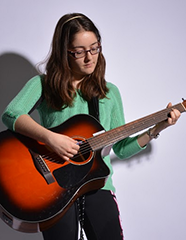
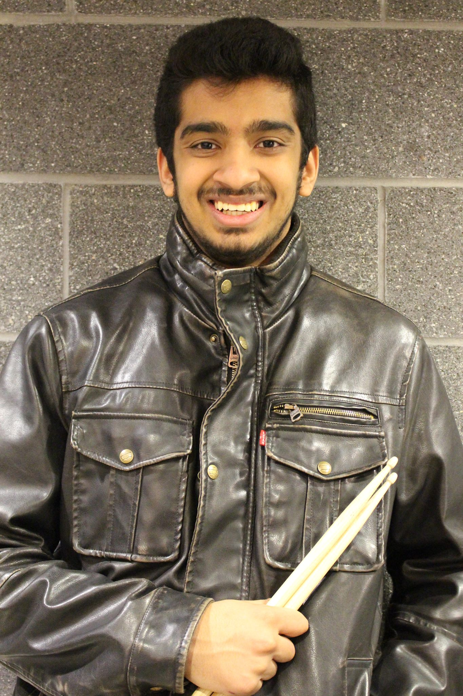
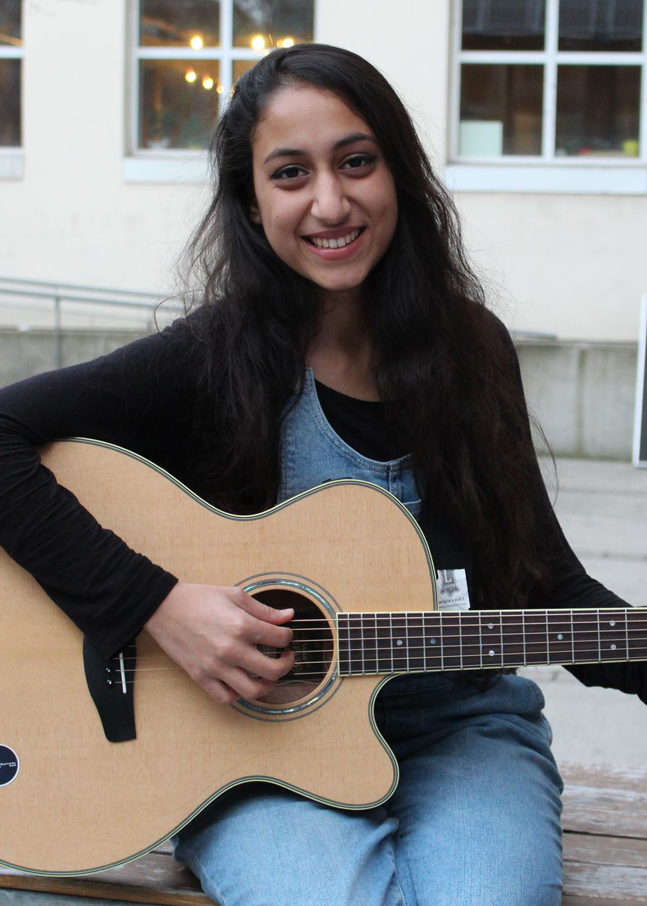
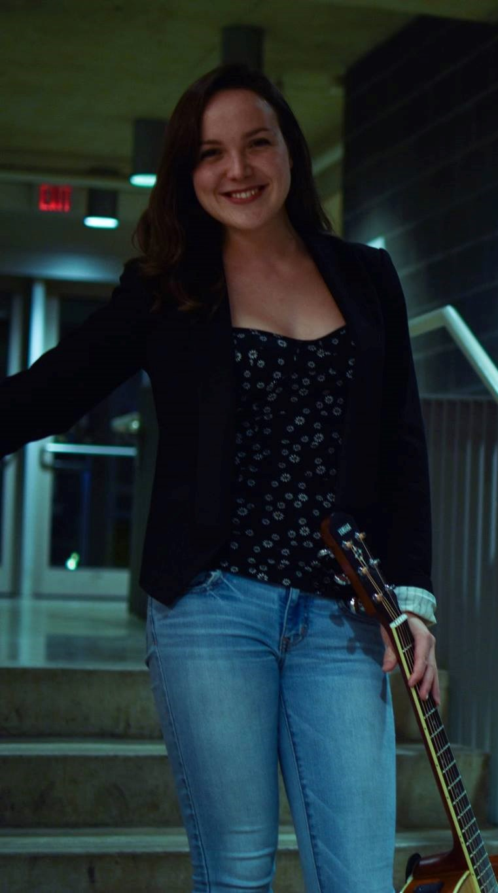
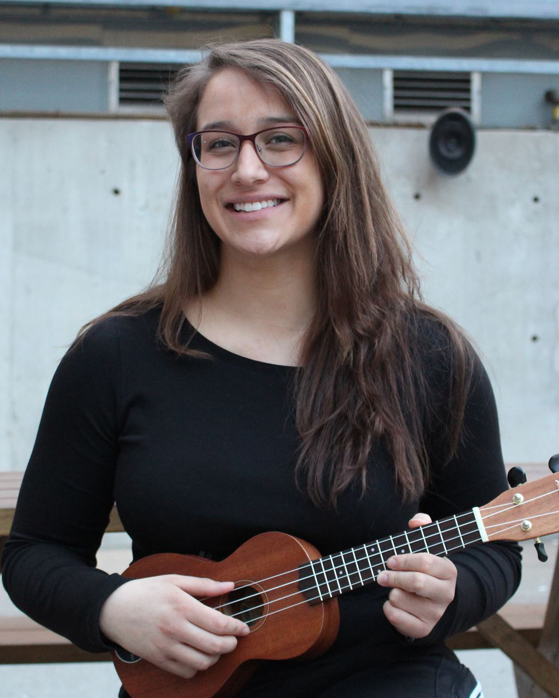
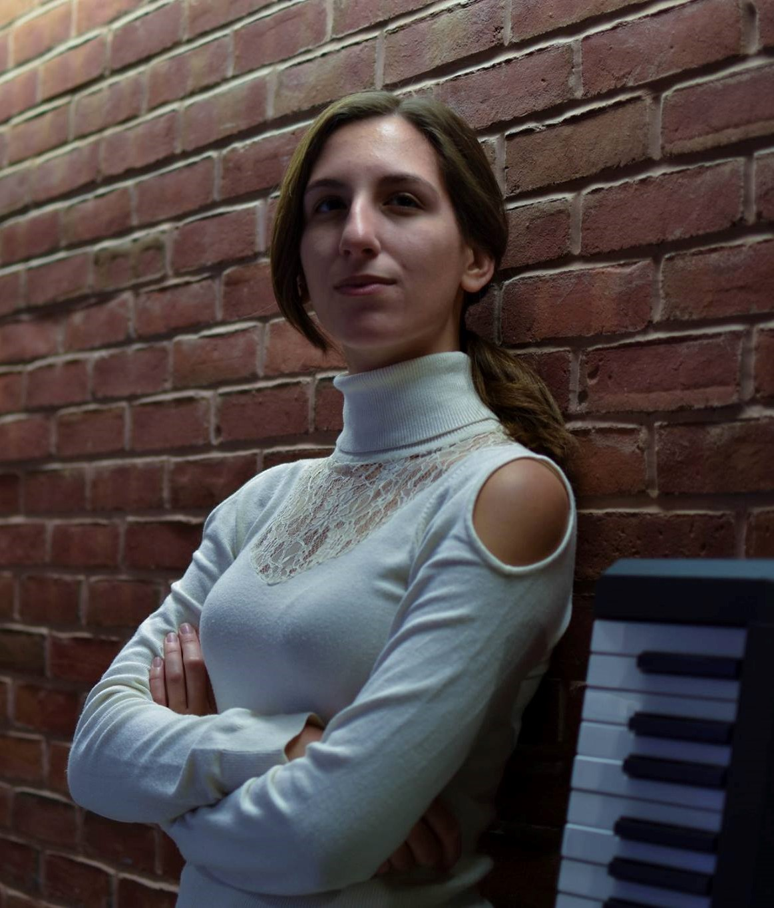
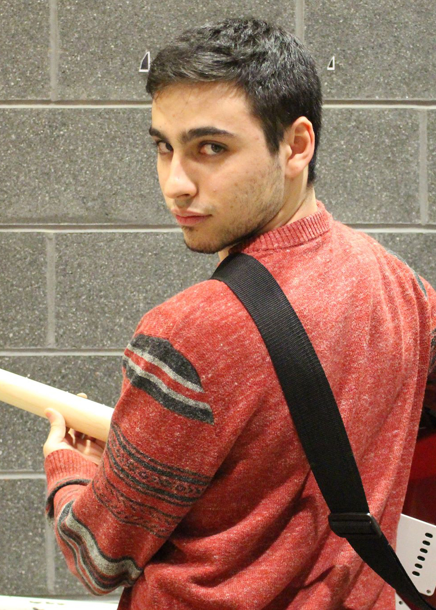
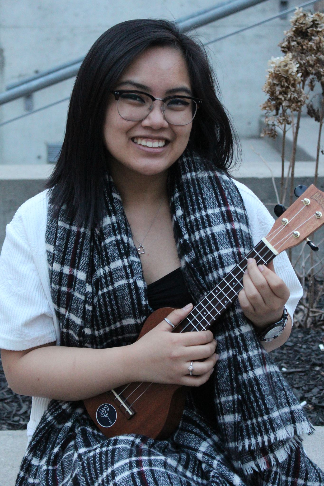
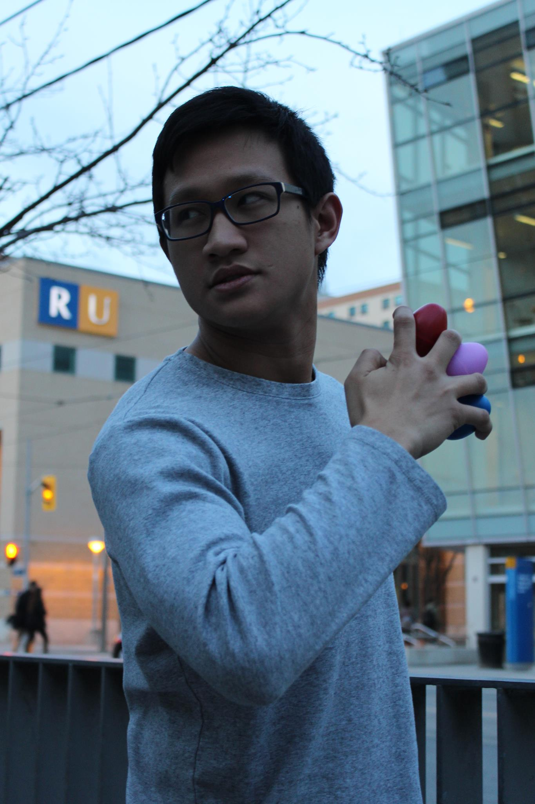

Musicians@Ryerson is Ryerson's only student group for musicians, whether instrumentalists, vocalists, or even djs. Our goals are to create a network of all musicians on campus to , form bands, and discuss anything music-related; provide opportunities for performing on campus, either informally in open jams or in formal performances; and give Ryerson musicians a chance to learn and grow musically, for instance in workshops run by experts in the field.
 |
 |
 |
|
Liam Grier President |
Sara Cristiano Vice President of Administration |
Kieran Ramnarine Vice President of Events, Spider-Man (Web Master) |
Yasmin Khatau Director of Educational Operations |
 |
 |
 |
 |
Dorothy Progosh Social Chair |
Steph Martin Performance Chair |
Marissa Bergougnou Creative Media Director |
Tristan Rotilio Events Coordinator Eyelashes Extraordinaire |
Kayla Douglas Spotlight Editor-In-Chief |
 |
|||
Klaudia Rekas Executive Assistant |
Bryan Hayes Executive Assistant |
Evan Coombs Performance Coordinator |
Kelsey Cueva A Capella & CultureJam Coordinator |
 |
|||
Rangga Luksatrio Creative Media Assistant |
2015-2016:
RSU Student Group of the Year
2013-2014:
RSU Student Group of the Year
Best Collaborative Event (Runner-Up)
Student Group Partner of the Year (2nd Runner-Up)
2012-2013:
Best New Student Group
Best Membership Engagement (Runner-Up)
Student Group Partner of the Year (1st Runner-Up)
"This group is a wicked tool for networking with other musicians. I met my band because of this group and I'm so grateful. I've also jammed with other bands because of this group. This group is pretty much responsible for the inception of my university music career."
- Salvatron Maio
August 29, 2015: Band Watch: a guide to navigating Ryerson's music scene by Allie Downham, The Eyeopener
March 12, 2015: Ryerson bands battle out at the Hard Rock Cafe by Emily Joveski, The Ryersonian, on Battle of the Bands.
March 8, 2015: Classic rock outfit wins Ryerson Battle of the Bands, Musicians@Ryerson competition by Aidan Macnab, The Eyeopener, on Battle of the Bands.
April 1, 2014: Busker Zachary Henderson performs live in Ryerson studio by Christina Dun, The Ryersonian, on Buskerfest.
March 26, 2014: The show must go on by Daniela Olariu, The Eyeopener, on Battle of the Bands.
March 12, 2014: Musicians@Ryerson: Windermere String Quartet Video by The Eyeopener
March 11, 2014: Classical String Quartet Comes to Campus by Debbie Hernandez, Ryerson Folio.
March 7, 2014: Musicians@Ryerson: Where music comes to grow by Debbie Hernandez, Ryerson Folio.
February 24, 2014: Play that funky music, Rye boy by Sean Wetselaar and Dasha Zolota, The Eyeopener.
December 5, 2013: Darkness: Music for Dreams by Emily Joveski, The Scope at Ryerson.
November 6, 2013: The Sound of Success by Behdad Mahichi, The Eyeopener.
October 25, 2013: Musicians@Ryerson Open Mics by Tiana DeNicola, Ryerson Student Life.
March 19, 2013: One, two, three, hit it: Musicians are in the house by Kailah Bharath, The Ryersonian.
March 15, 2013: Student group: Musicians at Ryerson by Dillon Li.
February 7, 2013: And all that jazz: Making a living in music by Erica Igreja and Gabby Rodrigues, Ryersonian.
February 6, 2013: Jazz liveblog: Making Music and Making a Living in Music by Deepika Shewaramani, Jacqueline Hunter, Prajakta Dhopade, and Tania Peralta.
November 7, 2012: Music makers and shakers unite by Sam Rashid, The Ryersonian
September 4, 2012: Come Together: A Meeting Place for Musicians by Nadya Domingo, Ryerson Folio.
Victor Copetti - President, 2014-2016
Aarone Amino - Performance Chair, 2014-2016
Eli Vandersluis - President, 2012-2014
Rebeca Ortiz - Vice President, 2013-2014
Juan Udarbe - Finance Chair, 2013-2014
Mark Parrott - Director of Educational Operations, 2013-2014
Anita Cazolla - Vice President, 2014-2015
Justin Bellmore - Social Chair, 2014-2015
Julia Wittmann - Creative Media Assistant, 2013-2014, Creative Media Director, 2014-2015
Brittany Starkman - Creative Media Director, 2013-2014, Creative Media Assistant, 2014-2015
Ekaterina Rubin - Executive Assistant, 2014
Vjosa Isai - Spotlight Editor-in-Chief, 2013-2015